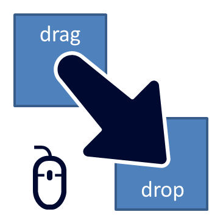

MY DATA VISUALIZER

- A glTF file (.gltf or .glb) for your visual with embedded data.
Or
- A glTF file (.gltf or .glb) for your visual and the csv (.csv) with the visual's data.
Alternatively, upload file(s) with the browser's file navigator:
Note: This version of
My Data Visualizer: